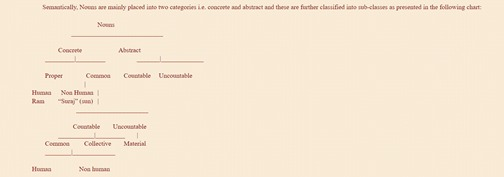

A noun is a ‘naming word’, it either talks about a person, place, or thing. In a sentence, nouns can play the role of subject, direct object, indirect object, subject complement, object complement, appositive, or even an adjective. The most basic thread of any language, below is a comprehensive list of some basic Dogri nouns. Reliable sources dictate how “according to gender, Nouns are categorized masculine ‘Jagot’ (boy) and feminine ‘Kuti’ (girl) on the basis of number nouns are singular ‘raja’ (king) and plural ‘raja’ (kings). Nouns are countable ‘bakara’ (the goat) as well as uncoutable ‘pani’ (water) also.”
| मा / मौरी | éé /ma / mɔri/ | Mother |
| बब्ब / प्यो | /bəbbə/ /pjo/ | Father |
| भ्रा | /praʹ/ | Brother |
| भैन | /pἑn/ | Sister |
| दादा | /dada/ | Grand father |
| दादी | /dadi/ | Grand Mother |
| चाचा | /caca/ | Uncle (Father’s younger Brother) |
| तातो / ताऊ | /tato/ /tau/ | Uncle(father’s elder brother) |
| चाची | /caci/ | Aunt ( Father’s younger Brother’s wife) |
| ताई | /tai/ | Aunt (Father’s elder Brother’s wife) |
| बुआ / फुफ्फेआ | /būa/ /phūphphea/ | Aunt (Father’s Sister) |
| फुफ्फड़ / फुफैआ | /phūphphəṛ/ /phūphɛa/ | Uncle (Husband of father’s sister) |
| नाना | /nana/ | Maternal Grand Father |
| नानी | /nani/ | Maternal Grand Mother |
| मामा | /mama/ | Maternal Uncle ( mother’s brother) |
| मामी | /mami/ | Aunt ( Mother’s Brother’s Wife) |
| मासड़ / मसैआ | /masəṛ/ | Uncle (Mother’s Sister’s Husband) |
| मासी | /masi/ | Aunt (mother’s sisters) |
| सौह्रा | Father-in-law (Husband’s Father/ Wife’s Father) | |
| सस्स | /səssə/ | Mother-in-law (Husband’s Mother/ Wife’s Mother) |
| जेठ | /jəʈh/ | Brother -in -law. (Husband’s elder Brother) |
| जठानी | /jəʈhani/ | Sister- in-law. (Husband’s elder Brother’s wife) |
| देर | /der/ | Brother- in- law. (Husband’s younger Brother) |
| दरानी | /derani/ | Sister- in- law. (Husband’s younger brother’s wife) |
| ननान / ननद | /nənən/ /nənəd/ | sister- in- law (Husband’s sister) |
| ननोइया / ननदोई | /nənoia/ /nənədoi/ | Husband’s sister’s husband. |
| साला | /sala/ | Brother- in- law. (Wife’s Brother) |
| सालेहार | /saleàr/ | Sister- in- law (Wife’s Brother’s wife) |
| साली | /sali/ | Sister- in -law (Wife’s sister) |
| साढू | /sàɖu/ | Brother-in- law (Wife’s sister’s Husband) |
| पुत्तर | /pūttər/ | Son |
| नूंह् | /nũ ʹ/ | Daughter- in- law |
| धी | /tì/ | Daughter |
| जोआई | /joai/ | Son- in- law. |
| जठूतर / जठीआ | /jəʈhūttər/ /jəʈhia/ | Nephew (Husband’s elder brother’s son) |
| जठूतरी / जठीऽ | /jəʈhūttəri/ /jəʈhi/ | Niece (Husband’s elder brother’s daughter) |
| दरूतर | /dərūttər/ | Nephew (Husband’s younger brother’s son) |
| दरूतरी / दरीऽ | /dərūttəri/ /dəri:/ | Niece (Husband’s younger brother’s daughter) |
| पोत्तरा | /pottəra/ | Grand Son(Son’s son) |
| पोत्तरी | /pottəri/ | Grand Daughter(Son’s daughter) |
| पड़ोतरा | /pəɖotəra/ | Great Grand Son (Grand Son’s son) |
| पड़ोतरी | /pəɖotəri/ | Great Grand Daughter (Grand son’s daughter) |
| दोह्तरा | /do ʹtəra/ | Grand son( daughter’s son) |
| दोह्तरी | /do ʹtəri/ | Grand daughter( daugther’s daughter) |
| भनेआ | /pəʹnea/ | Nephew (Sister’s Son) |
| भनेई | /pəʹnei/ | Niece (Sister’s daughter) |
| तयेरा / तैह्रा | /təjera/ /tɛ ʹra/ | Cousin(male) (Father’s elder Brother’s son) |
| तयेरी | /təjeri/ | Cousin(Female) Father’s elder brother’s daughter) |
| चचोरा | /cəcera/ | cousin(Male) Father’s younger brother’s son) |
| चचोरी | /cəceri/ | Cousin (Female) Father’s younger brother’s) |
| ममेरा | /məmera/ | Cousin(Male) Mother’s brother’s son, |
| ममेरी | /məmeri/ | Cousin(Female) (Mother’s brother’s daughter) |
| मसेरा | /məsera/ | Cousin(Male) (Mother’s sister’s son) |
| मसेरी | /məsəri/ | Cousin(Female) (Mother’s sister’s daughter) |
| फफेरा | /phəphera/ | cousin(Male) (Father’s sister’s son) |
| फफेरी | /phəpheri/ | cousin(Female) (Father’s sister’s daughter) |
| तैह्रा | /tɛ ʹra/ | Uncle- in- law ( Father-in-law’s elder brother) |
| तैतस / तैह्स | /tɛtəs/ /tɛ ʹs/ | Aunt- in- law (Father- in- law’s elder brother’s wife) |
| पतरौह्रा | /pətərɔ ʹra/ | Uncle- in –law ( Father -in -law’s younger brother) |
| पितरस | /pitərəs/ | Aunt-in- law( Father-in-laws younger brother’s wife) |
| फफेस | /phəphes/ | Aunt- in- law( father- in- law’s sister) |
| फफेसड़ा | /phəphesəṛa/ | Uncle- in- law (Father-in-law’s sister’s husband) |
| माह्लरा | /màləra | Maternal Uncle- in- law( mother- in- law’s brother/ husband’s maternal uncle) |
| ममेस / ममेआस | /məmes/ /məmeas/ | Maternal aunt- in –law( Maternal uncle- in- law’s wife) |
| मसेस | /məses/ | Aunt- in- law ( mother-in-law’s sister) |
| मसेसड़ा | /məsesṛa/ | uncle –in- law (Mother- in -law’s sister’ husband) |
| ददेसड़ा | /dədesəṛa/ | Great Grand Father- in-law (father-in-law’s father) |
| ददेस | /dədes/ | Great Grand Mother-in-law (father-in-law’s mother) |
| कुड़मनी / ब्याह्न | /kūṛməni/ /bjàn/ | Son’s /daughter’s Mother- in- law |
| कुड़म / ब्याही | /kūṛəm/ /bjài/ | Son’s/ daughter’s Father- in -Law |
| खसम / मर्हाज /धरैआह्ला /मदेई | /kəsəm/ /məràj/kəʹreàla /mədei | Husband |
| त्रीमत / लाड़ी /धरैआह्ली | /trimət/ laṛi / kəʹrʹeàli | Wife |